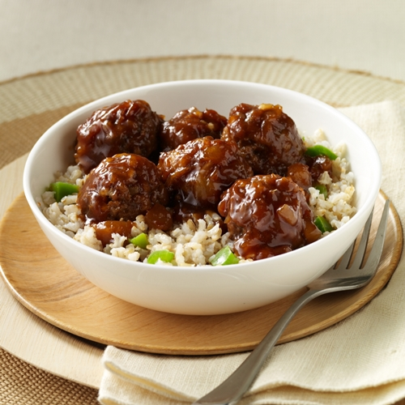

Rice and Meatballs

A great addition to your college diet or meal prep routine
this receipe came to me at some point during my third and fourth year of collge and is a recipe I think I will stick with for the rest of my life. It is really cost effective, healthy as far as I'm concerned, quick to make and pack, the list of benefits goes on!
Ingredients
- rice
- frozen meatballs
- frozen vegetables
- sauce (optional)
Steps
- cook rice (45 mins)
- microwave vegetables and meatballs together
- combine all ingredients
- add any additional sauce to your taste
- enjoy!